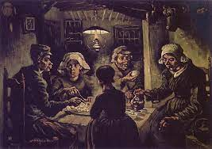

O Naturalismo
Ele surgiu na França, em meados do século XIX, e se espalhou rapidamente para outros países da Europa e do mundo.O naturalismo foi um movimento artístico e cultural que se manifestou na literatura, no teatro e nas artes plásticas, e teve como principais características a objetividade, a impessoalidade e o retrato fiel da realidade.

Oposto ao Romantismo, que apresentava uma face sonhadora, com idealizações, subjetivismos e fuga da realidade, o naturalismo prezou pelo objetivismo científico.
Influenciado pelas correntes científicas e filosóficas que surgiam na Europa como o determinismo, o darwinismo e o cientificismo, para os artistas naturalistas, tudo estava determinado e possuía uma explicação lógica pautada na ciência.
Através de uma visão imparcial dos fatos, nada era sugerido ou apresentado de maneira subjetiva. O ser humano passou a ser visto como uma máquina, sem livre arbítrio, e influenciado pelo meio social e físico em que está inserido.
Assim, surge uma arte de denúncia social, focada nos temas da pobreza, das desigualdades, da disputa de poder e das patologias sociais.
No Brasil, o movimento naturalista começa em 1881 com a publicação da obra O Mulato, de Aluísio de Azevedo. Já em Portugal, o movimento surge em 1875 com o romance O crime do padre Amaro, do escritor Eça de Queiroz.
Características do Naturalismo
Determinismo: segundo essa corrente teórica, a natureza determina o caráter e o comportamento do ser humano, uma vez que tudo já está pré-determinado e estabelecido. Por essa perspectiva, o homem é influenciado pelo meio em que vive, sendo fruto dele.
Positivismo: corrente filosófica que se apoia na ciência para atingir o conhecimento verdadeiro. Para esses teóricos, o conhecimento científico é utilizado para explicar as teorias e as leis científicas, bem como o ser humano e a sociedade.
Objetivismo científico: para os naturalistas, a ciência era a chave e os fatos eram explicados à luz das correntes científicas que vigoravam em meados do século XIX. Assim, os artistas naturalistas não projetam em suas obras utopias e ideias idealizadas.
Darwinismo social: pautado nas ideias de Charles Darwin, como a seleção natural e o evolucionismo, esse conceito sugere que os mais fortes sobrevivem às adversidades da sociedade, enquanto os outros enfraquecem.
Oposição ao Romantismo: avesso às ideias românticas de fuga da realidade e subjetividade, o naturalismo focou em aspectos da objetividade, além de retratar a realidade sem idealismos.
Imparcialidade e impessoalidade: apoiados em correntes científicas para explicar a realidade, os autores do naturalismo costumam ser objetivos, imparciais e impessoais em suas descrições. Assim, deixam de lado os juízos de valores e opiniões que não estejam fundamentados em teorias.
Descrições detalhadas: na literatura naturalista, existe grande preocupação com as minúcias, pois os autores pretendem fazer um retrato fiel de onde se passa a trama. Para isso, as narrativas naturalistas costumam ser lentas e cheia de detalhes.
Zoomorfização: influenciado pelo darwinismo social, no naturalismo as personagens apresentam características animalescas e instintivas, através de uma perspectiva biológica. Assim, os comportamentos humanos se aproximam dos animais, mostrando que o homem é condicionado pelo meio em que vive.
Retrato fiel da realidade: na arte naturalista, é notória a preocupação em observar o mundo e as coisas que nos rodeiam de maneira bastante minuciosa para entregar ao expectador um retrato verossímil da realidade.
Temas degradantes e de patologia social: na arte naturalista, o tom é de denúncia com foco para os problemas sociais e morais. Os temas mais explorados pelos artistas são: a pobreza extrema, as injustiças, as desigualdades sociais, a violência, as perversões, os crimes e a falta de caráter.
Passividade do ser humano: na arte naturalista, os seres humanos são produtos das forças do mundo, e, por isso, não possuem livre-arbítrio. Eles são guiados pelas leis científicas e influenciados pelo meio social e físico em que vivem.